Self-Hosted Team Communication with Mattermost on AWS
Published: January 2025
By: Mohibullah Rahimi
Technical Stack: AWS VPC, Amazon Linux 2, MySQL, Mattermost, Security Groups
The Need for Secure Team Communication
With over 20 million users on Slack and Microsoft Teams, many organizations still require self-hosted solutions due to:
- Compliance requirements prohibiting third-party data handling
- Data sovereignty needs for sensitive communications
- Custom security policies demanding full infrastructure control
This Mattermost deployment provides a secure alternative while maintaining team collaboration capabilities.
Solution Architecture

Figure 1: AWS architecture with public/private subnets and security boundaries
Core Components
Design Decisions
- Public Subnet (10.0.1.0/24): Hosts Mattermost with controlled access via ports 8065 (web) and 22 (SSH)
- Private Subnet (10.0.2.0/24): MySQL database isolated from direct internet access
- NAT Gateway: Enables private subnet instances to fetch updates securely
- Bastion Host: Single entry point for database administration
Security Features
- Network segmentation between tiers
- Least-privilege security group rules
- Encrypted database connections
- No public IP on database instances
Implementation Guide
AWS Network Setup
VPC Creation
Create the foundational VPC with CIDR 10.0.0.0/16:
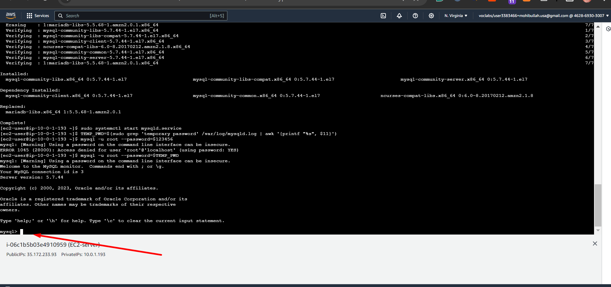
VPC configuration in AWS Console
Subnet Configuration
Create segregated subnets for application and database tiers:
Public Subnet
- CIDR: 10.0.1.0/24
- Auto-assign public IP
- Route to Internet Gateway
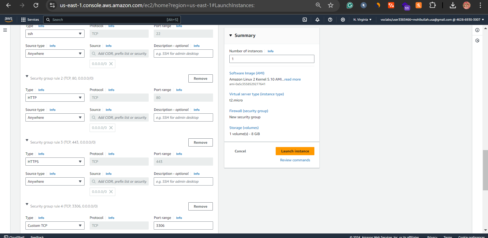
Private Subnet
- CIDR: 10.0.2.0/24
- No public IP
- Route to NAT Gateway

Security Configuration
Internet & NAT Gateway
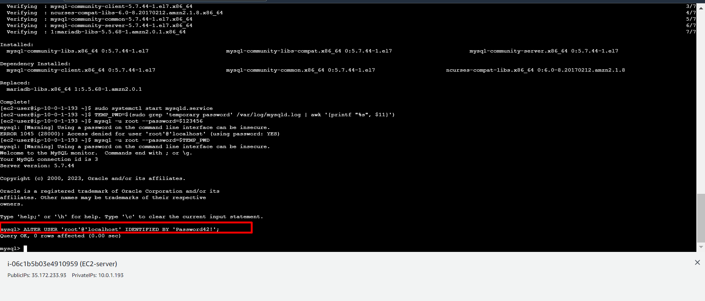
Internet Gateway attached to VPC
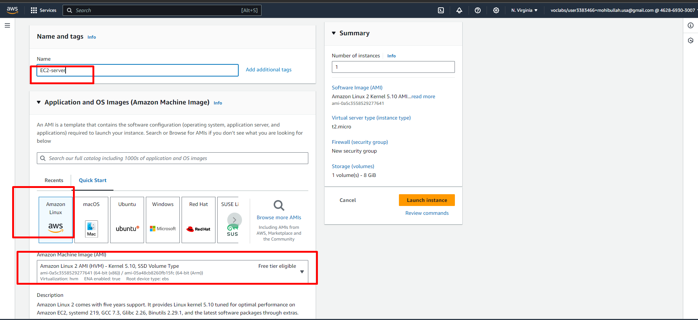
NAT Gateway in public subnet
Route Tables
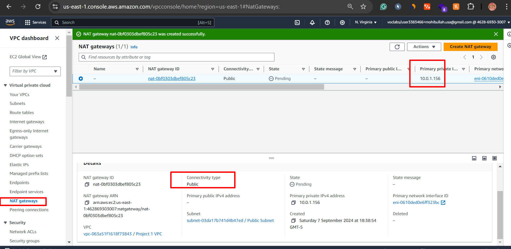
Public route to Internet Gateway
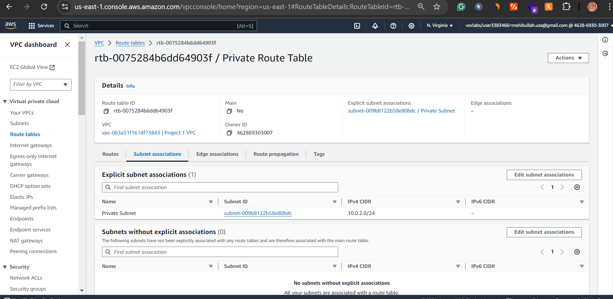
Private route to NAT Gateway
EC2 Instance Deployment
Mattermost Application Server
Launch in public subnet with security group rules:
- Port 8065 (Mattermost)
- Port 22 (SSH from trusted IPs)
- Ports 80/443 (Optional for reverse proxy)
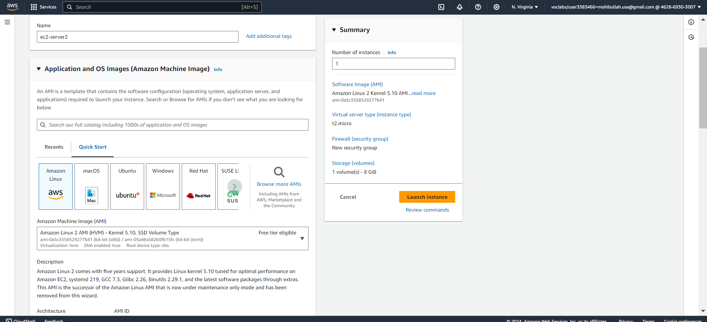
Amazon Linux 2 AMI selection
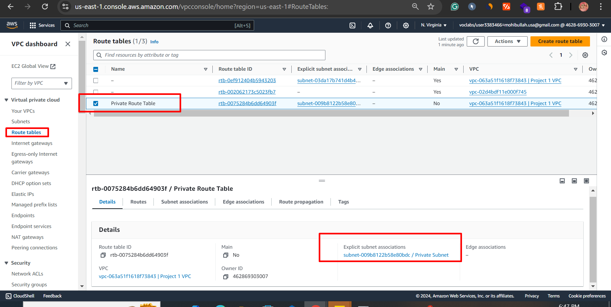
Mattermost security group configuration
MySQL Database Server
Launch in private subnet with security group rules:
- Port 3306 (From application subnet only)
- Port 22 (SSH via bastion)
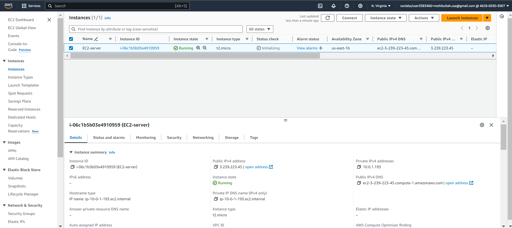
MySQL security group rules
Software Installation
MySQL Database Setup
# Connect via bastion host
ssh -i YOUR_DB.pem ec2-user@YOUR_DB_PRIVATE_IP
# Install MySQL
sudo yum update
wget http://dev.mysql.com/get/mysql57-community-release-el7-9.noarch.rpm
sudo yum localinstall mysql57-community-release-el7-9.noarch.rpm -y
sudo yum install mysql-community-server -y --nogpgcheck
sudo systemctl start mysqld.service
# Secure installation
TEMP_PWD=$(sudo grep 'temporary password' /var/log/mysqld.log | awk '{printf "%s", $11}')
mysql -u root --password=$TEMP_PWD
ALTER USER 'root'@'localhost' IDENTIFIED BY 'Password42!';
exit
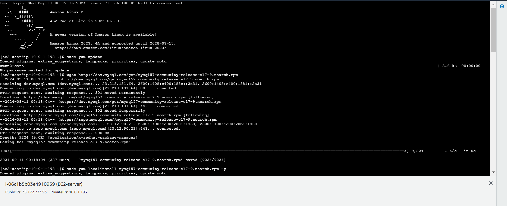
MySQL secure installation process
Mattermost Application Setup
# Connect to application server
ssh -i YOUR_APP.pem ec2-user@YOUR_APP_PUBLIC_IP
# Install Mattermost
wget https://d6opu47qoi4ee.cloudfront.net/install_mattermost_linux.sh
sudo yum install dos2unix -y
sudo dos2unix install_mattermost_linux.sh
chmod 700 install_mattermost_linux.sh
sudo ./install_mattermost_linux.sh YOUR_DB_PRIVATE_IP
# Start Mattermost
sudo chown -R mattermost:mattermost /opt/mattermost
sudo chmod -R g+w /opt/mattermost
cd /opt/mattermost
sudo -u mattermost ./bin/mattermost
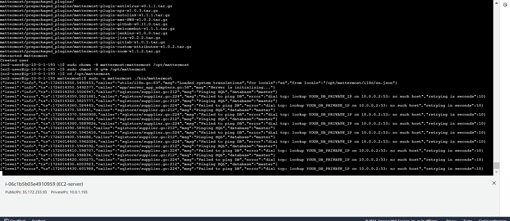
Mattermost server startup
Testing and Validation
Functional Testing
- Web Interface:
- Access http://[PUBLIC_IP]:8065
- Verify team creation
- Test real-time messaging
- Database Connectivity:
- Confirm message persistence
- Check user account storage
Security Validation
- Network Isolation:
- Attempt direct MySQL access from internet (should fail)
- Verify private subnet has no public IP
- Access Controls:
- Confirm only port 8065 is publicly accessible
- Test SSH access restrictions
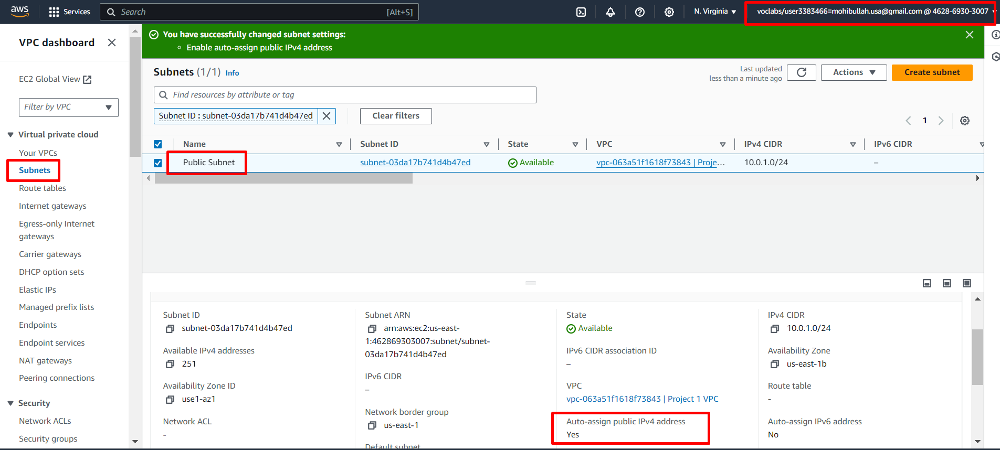
Mattermost web interface accessible on port 8065
Business Value and Next Steps
This implementation delivers a secure, self-hosted alternative to commercial team communication tools:
Security Benefits
- Complete data control
- Compliance with strict regulations
- Reduced attack surface
Cost Efficiency
- No per-user licensing
- Predictable AWS costs
- Open-source software
Future Enhancements
- Load balancing for high availability
- SAML/SSO integration
- Automated backups
This Mattermost deployment on AWS provides organizations with a fully controlled team communication solution that meets security and compliance requirements while maintaining collaboration capabilities. The architecture demonstrates proper network segmentation and security best practices for self-hosted applications in the cloud.